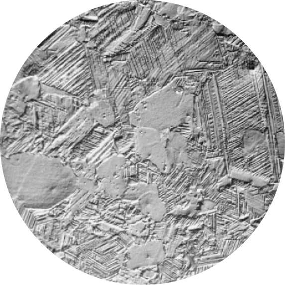
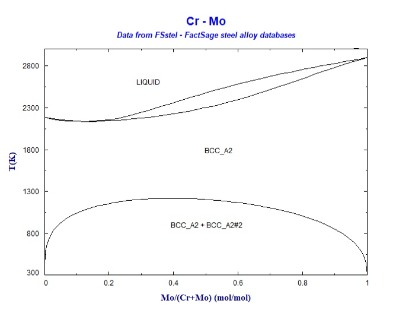

|
GitHub Link of the project [CLICK HERE]Click on the heading to see the project uploaded on GitHub for more information. |
|  | Predicting composition of Cr-Mo alloyProblem DescriptionUsing the regression models in a real thermodynamic system. Applied two supervised algorithms, Linear regression and K-Nearest Neighbors to predict the composition values at various eta values. Note: Link is given at the bottom of the page |
More about the projectWhat does eta values mean?These are dimensionless number, that represent normalized energy parameters which corresponds to:
What are the other contents in the dataset?The dataset contains: u0, u1, u2, u3, u4, eta1, eta2, eta3, eta4. Here
Results
Using the efficient model, preferbly the KNN model can be used to predict the composition values at different eta values. |
 |
|
|
GitHub Link of the project [CLICK HERE]Click on the heading to see the project uploaded on GitHub for more information. |